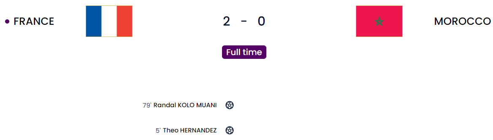
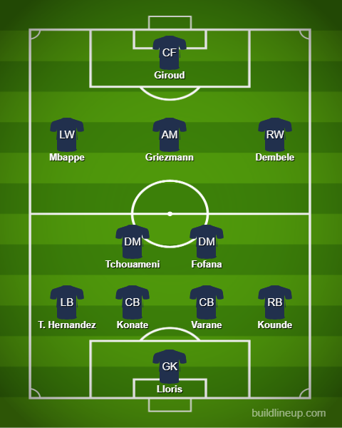
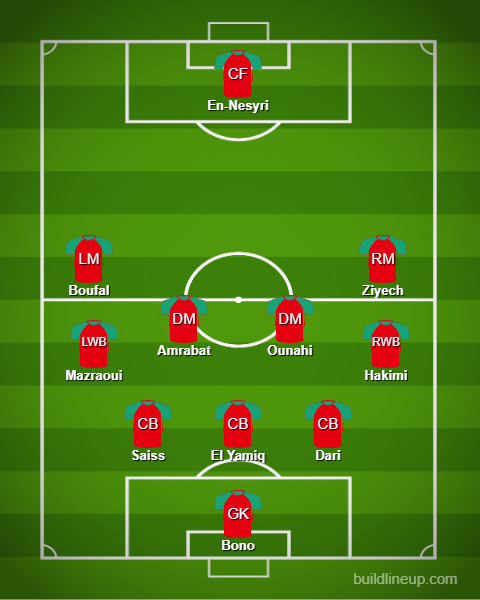

Day 25
France v Morocco

Holders make it easy. Morocco misfire. Mbappe v Messi.
Easy game for France. Harder for Morocco because they actually finally conceded playing the same park-the-bus tactics(Love to see it shatter immediately when a goal goes in because it makes you look like a proper idiot 🤣). It completely shifted both teams' game plans. France started sitting back which was pretty similar to England now that I think about it 🤔. They sat back and England attacked hard and got that penalty. They switched on and got the second and then sat back again allowing England to attack again and again. We got a sense of deja vu when the first goal went in from Theo Hernandez(I feel bad that he is balling out so hard at his brother’s expense 😅 but sometimes you have to take your chance and he has brilliantly even with that brain fart against England 😬). Morocco decided to go on the offensive even more so after their captain Saiss couldn’t continue(This is what happens when you risk their fitness like it’s nothing 🤦♂️). Aguerd, Saiss and Mazraoui were the main talking points due to their fitness and in the end, Aguerd didn’t start, Saiss and Mazraoui came off and they had to chase the game without their main defenders. Sorry for getting sidetracked. The first goal. Griezmann manages to get behind the 5 man wall and got the cross in which was defended but Mbappe tried a shot that looped up and Theo Hernandez was there to meet it on a half-flying volley. After this, it was a Morocco onslaught and France only countered. It was evident Saiss couldn’t continue when Giroud latched onto a through ball and managed to get the shot away. He just stopped running. So he was brought off for a midfielder which meant them switching to a back 4 system. The rest of the story before the second goal was mostly Morocco attacking hard but having no finishing touch. There was one bicycle attempt from one of the CBs El Yamiq from a corner and it hit the post and En-Nesyri was static for the ball. Ounahi was someone who had a rather decent game and he had a shot from range that was parried well by Lloris. The second goal was scored by a sub who was on for…..44 seconds 😱. Absolutely insane. Kolo Muani was called up as a replacement for Nkunku who got injured before this tournament and he was at the right place at the right time. Mbappe was sent through and he managed to twist and turn past so much of Morocco’s backline before hitting the pass which was bundled in by an unmarked Kolo Muani. What a time to score your first international goal. After that, it was just defense defense defense from France and they held on. Konate was really solid alongside Varane compared to Upamecano who was shaky. They had him and Rabiot unavailable due to a virus from the news so Konate and Fofana were brought in. Griezmann was virtually everywhere in the midfield and this renaissance is amazing to see from him after his failed spell at FC Barcelona. We have a showdown of the PSG teammates: Messi v Mbappe. Morocco I love your achievement of making it this far but I absolutely ABHOR your tactics and I am glad you weren’t there to bore the final out.
Preview of the France v Argentina game tomorrow 🤩
France

Morocco
